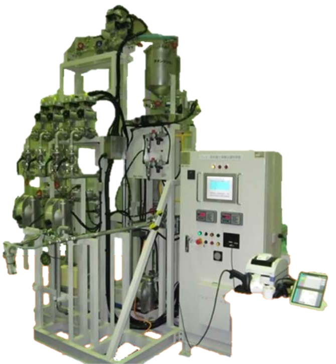

ポンプにて原料を移送し、調合タンク重量より投入量を計量します。流量での管理も可能です。原料容器からポンプで直接吸い込むことができ、粉体にも対応します。

投入時間を短縮しつつ、配合ミスなどの人為ミスを防止します。投入の順番や速度、撹拌時間は任意に設定できます。
配合比率を登録し、製造量に応じて各配合重量を自動計算することにより、配合量の計算ミスを防止します。
| 原料 | 登録した配合比率 | 製造量 100kg のとき | 製造量 60kg のとき |
|---|---|---|---|
| A液 | 50% | 50 kg | 30 kg |
| B液 | 30% | 30 kg | 18 kg |
| C液 | 20% | 20 kg | 12 kg |
※数値は説明用の表示イメージです。
| 作成日時 | 原料ロットNo. | 製品ロットNo. | etc. |
|---|---|---|---|
※取り出せる項目の例です（作成日時・原料ロットNo.・製品ロットNo. etc.）。画面は表示イメージです。
原料の種類や投入の順番、製造量など、現在の調合工程をお聞かせください。
ノリタケ株式会社
エンジニアリング事業部 流体テクノ部
エレクトロニクスグループ